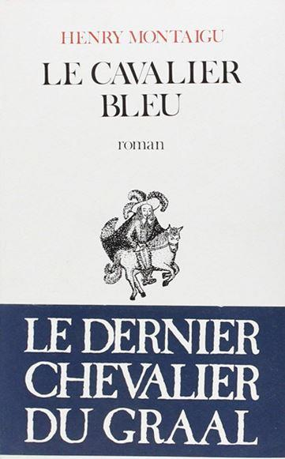

L'histoire littéraire, pas davantage que l'histoire politique, n'est sur le point de s'achever. Chaque génération apporte sa provende d'œuvres décisives qui sont marquées par leur temps et qui marquent leur temps, non sans l'habituel retard des reconnaissances de cette sorte.
Les lecteurs de Baudelaire ou de Stendhal du siècle dernier appartiennent à la même race, audacieuse et fervente, qui se rassemble aujourd'hui autour de l'œuvre de Henry Montaigu. Les signes sont moins trompeurs d'autant qu'ils sont plus subtils. Il existe, autour du Cavalier bleu, une intense circulation d'esprits vifs. Cette œuvre romanesque, au sens le plus intérieur du terme, c'est-à-dire placée sous la voûte romane du Paraclet, est à l'origine d'un faisceau de sympathies spirituelles dont les œuvres sont encore à naître. Les lecteurs du Cavalier bleu appartiennent à cette phratrie rebelle à l'ordre du temps, et disposée, le cas échéant, à ourdir contre l'usure de la vie quotidienne quelque conjuration magnifique.
Œuvre de résistance aux normes profanes de la mondialisation, œuvre de fidélité à un esprit français qui tient à la fois de l'épée de Pardaillan et de la secrète égide philosophale de la Délie, l'œuvre de Henry Montaigu s'inscrit dans la tradition de la liberté conquise, - fort différente de la liberté seulement octroyée. Cette tradition va de Rabelais à Sasha Guitry, en passant par Montaigne, Molière, Gobineau, Villiers de l'Isle-Adam ou André Suarès. Sachons que la liberté conquise est le signe immémorial de la franchise, et qu'être français ne saurait avoir d'autre sens que celui d'un exercice particulier de la liberté.
« ... Et rentrer dans cette liberté d'esprit dont les charmes sont dangereux, à ce qu'ils disent, mais dont le bon emploi est certainement ce qu'il y a de plus utile au monde". Cette citation de Joseph Joubert, en exergue de La Baronne prodigieuse, répond à cet autre fragment : " Le léger domine le lourd. Quand la lumière domine l'ombre, quand le fin domine l'épais, quand le clair domine l'obscur, quand l'esprit domine le corps, l'intelligence la matière, alors le beau domine le difforme et le bien domine le mal. »
Ces questions de légèreté et de liberté vont bien au-delà du traité de style ; elles rejoignent la théologie, et plus profondément encore, ce que René Guénon (auquel Henry Montaigu a consacré un ouvrage décisif, René Guénon ou la mise-en-demeure) nommait la métaphysique. On se tromperait fort en voyant dans cette perspective métaphysique une inclination excessive vers l'abstraction. Rien, j'en porte témoignage, l'ayant un peu connu, n'ennuyait autant Henry Montaigu que ces « idées générales » qui sont, bien plus que les faits, le fond de commerce du journalisme de mauvais aloi. La métaphysique, dont s'emparent les poèmes, les récits et les chroniques de Henry Montaigu, comment mieux la définir que par une formule bien connue de notre cher Alcofribas Nasier: « Rombre l'os et sucer la substantifique moelle ».
À l'évidence, le monde n'est pas exclusivement à l'image de ses représentations les plus banales. Le cheminement initiatique du Cavalier bleu consiste précisément à sortir des représentations et à tenter l'approche de la présence, ce buisson ardent. L'œuvre de Henry Montaigu est une quête du Graal, mais sans pathos et sans excès d'humeurs, la vertu chevaleresque y étant toute désinvolture et légèreté. On peut aller fort loin sans forcer la note, en demeurant en accord, selon l'auguste loi des correspondances, avec l'areté homérique. La phrase de Joubert sur la légèreté donne le diapason du Cavalier bleu. Son pas le conduit hors de la lourdeur, de l'épaisseur et de la laideur vers des contrées belles, fines et légères comme des feuillages dans la lumière où séjourne le « souverain bien », qui est tout autre chose que la morale des moralisateurs. Où trouver le lieu et la formule de cette morale ? Mais encore dans l'Abbaye de Thélème : « Fay ce que voudras » !
Défenseur de l'idée de la France en tant que royaume, Henry Montaigu s'est toujours tenu à l'écart des travers et des transes des idéologies modernes. La France est un royaume, c'est l'évidence ; encore faut-il comprendre que ce royaume n'existe que par des frontières sacrées. Parmi les auteurs de la seconde moitié du vingtième siècle, Henry Montaigu est sans doute celui qui sut porter le plus loin et le plus haut la méditation sur le sacré. On peut imaginer sans peine l'obsolescence des formes religieuses, mais le sacré lui-même ne saurait disparaître.
Dans La Couronne de feu, lecture symbolique de l'histoire de France, Henry Montaigu ébauche une nouvelle historiographie désencombrée du fatras des « sciences humaines » qui jargonnent à en faire perdre de vue lignes et couleurs. Ces prétendues « sciences » sont à la fois étrangères à l'esprit de finesse et à l'esprit de géométrie. Ajoutant des grilles d'interprétation les unes aux autres, elles brouillent la vision la mieux exercée. L'idée profonde, novatrice, qui jaillit de la lecture de La Couronne de feu est que l'histoire est trop sérieuse pour être laissée aux historiens ; mieux vaut en laisser l'usage aux écrivains et aux poètes.
L'histoire, en bien et en mal, est faite d'œuvres et de poésie, bien davantage que d'économie, de jurisprudence ou de traités ; et d'autre part, l'histoire est un récit et le récit connaît ses lois musicales, son solfège et ses variations, comme l'âme humaine elle-même. « Certes, écrit Montaigne, c'est un sujet merveilleusement vain, divers et ondoyant que l'homme », et c'est au chroniqueur d'exercer l'esprit de finesse ; l'esprit de géométrie revenant à la considération des vastes orchestrations du symbole ou du mythe.
Les modernes ont reproché aux classiques d'avoir, selon le mot de Racine lui-même « pour seule règle de plaire au public ». Baudelaire fera l'éloge du plaisir aristocratique de déplaire. Remarquons seulement que ce n'est point tant l'auteur qui change de dessein que le public qui change de nature.
L'œuvre de Henry Montaigu se dégage, d'un fort mouvement, des querelles d'anciens et de modernes en montrant que la fidélité aux principes est l'inventrice des formes les plus libres. Classique par son refus de céder au culte morbide de la subjectivité, de l'outrance ou de la dictature de l'informe, et cependant au-delà de tout classicisme par son sens du mystère, son audacieuse plongée dans les hauteurs lumineuses du verbe, l'œuvre de Henry Montaigu mérite bien le titre d'œuvre par la diversité des forces qu'elle fédère, alors que tant d'ouvrages modernes ne sont que des travaux.
Poétique, théâtrale, narrative, doctrinale, historique, l'œuvre polyphonique de Henry Montaigu s'impose à nous, peu à peu, avec la même force que les œuvres de Fernando Pessoa, au Portugal, ou d'Ernst Jünger, en Allemagne. Cette force est celle des lecteurs. Le Cavalier bleu, comme Les Falaises de Marbre, sont des livres qui, selon le mot de Paul Morand, « ne sont aimés que de ceux qui les lisent ».
Hasardons quelques réflexions mathématiques. Jusqu'à preuve du contraire, le nombre proportionnel de « jüngériens » ayant lu Sur les Falaises de marbre reste tout de même plus important que le nombre de « cartésiens » ayant lu Le Discours de la méthode ou Les passions de l'âme. L'œuvre de Henry Montaigu gagne son territoire par ses seules forces. Ainsi, la Sagesse du roi dormant nous est donnée comme un privilège que nous ne sommes pas encore obligés de partager avec les cuistres. Sagesse d'une élite, gnose romane des gradations et des justes hiérarchies vivantes dans la geste initiatique des héros comme dans la doctrine formulée par René Guénon – au grand scandale des bien-pensants, qui ne veulent pas comprendre que l'égalitarisme est la ruse du riche ! Sagesse du silence et de la contemplation, de la domination de soi-même dans le cœur des mondes qui est bien le seul recours de ceux qui n'ont que l'Être, cet intime frémissement de la totalité, pour guerroyer contre le néant triomphant, contre l'usure dont parlait Ezra Pound dans ses Cantos, contre le mensonge de l'histoire linéaire.
« L'histoire est sphérique, écrit Henry Montaigu. La réalité la plus intérieure de l'histoire est sphérique. Elle ne devient linéaire, progressive, événementielle que par décadence, oubli des fondement et aboutit alors - davantage par le fait de la chute des temps que par l'effet des révolutions - aux diverses idéologies sociales et profanes du réalisme politique... Dans cette perspective, le rôle de la France doit être à la mesure de son histoire, de sa permanence à travers les temps et de son mystère. » Ce propos fut et demeure mal compris. L'histoire sphérique paraît contraire à la théologie de la Providence, alors qu'elle n'est qu'un refus du déterminisme et du progressisme. La linéarité est une croyance abusive en la loi de l'enchaînement des effets et des causes. Ce qui paraît déterminé, enchaîné irréfragablement, ne l'est jamais qu'après coup. Nous croyons voir une suite logique, alors que nous ne cédons qu'à la force de conviction de l'interprétation du déjà advenu. Reprendre sa liberté à l'égard du carcan de l'explication linéaire, fallacieuse car toujours postérieure à la preuve possible de sa pertinence, c'est retrouver les ressources profondes de la langue française, sa force ondoyante, son allure naturellement dégagée et prompte, par le fait, à s'affronter aux énigmes radicales de l'existence.
La triste habitude est déjà prise depuis quelque temps de déprécier systématiquement tous les écrivains français. À rebours de ce conformisme, l'œuvre de Henry Montaigu est pleine d'hommages, de signes d'intelligence adressés, par-delà les rets de l'espace-temps à ses semblables. Les auteurs qui, moins que d'autres, sont en proie aux affres de l'envie, entraînent leurs lecteurs dans l'excellente compagnie des fils de roi. Laissons les dénigrements aux "derniers des hommes" dont parlait Nietzsche. Avec eux s'achèvent les heures du nihilisme. Aux pas du Cavalier bleu, franchissons la ligne qui sépare le nihilisme des retrouvailles avec les formes de nos songes, là où le Roi dormant s'éveille.
Le mythe du Roi dormant, qui court comme un filon d'or alchimique dans tous les livres de Henry Montaigu, n'est pas sans évoquer le mythe sébastianiste dans l'œuvre de Fernando Pessoa, magistralement éclairé par les études d'André Coyné, et ravivée par l'aventure politique et romanesque de Dominique de Roux. Le Cavalier bleu est, comme le recueil Messages de Pessoa, un livre héraldique et initiatique. Le roman, pour entrainant qu'il soit, avec ses courses, ses combats, ses paysages, est d'abord un moyen de connaissance ; il donne de la réalité une vision stylisée, armoriée. L'œuvre comme armorial initiatique, comme palimpseste de la nature invisible et visible, rejoint, là encore, l'auteur d'Héliopolis, et plus en amont, les précis déchiffrements néoplatoniciens et pythagoriciens de Maurice Scève ou les grandioses méditations sur la Providence de Joseph de Maistre.
Le cœur de la Tradition est l'instant - ce qui se tient, immobile Thulée glorieuse, séjour du dieu dorique, dans l'immensité des eaux. Tout l'enjeu tient dans le défi : faire du sens de la Tradition la plus haute et la plus libre des exigences poétiques. À cet égard l'œuvre de Henry Montaigu témoigne de la précellence du poète sur le clerc. Tout est dit dans Opéra doré, procession liturgique du Logos-Roi qui donne son ultime chance à la spiritualité romane : « Rose héraldique /Voici le lys et le lotus / L'étang de jade et la royale Basilique/ Et la méditation devant le mont Mérou/ Et la source forestière de Notre-Dame-des-Aulnes ».
On pourrait appliquer à Opéra doré comme au Cavalier bleu, la définition que Paul Claudel donne du théâtre Nô : « Ce n'est pas quelque chose qui se passe, mais quelque chose qui arrive ». D'où la difficulté du lecteur moderne à entendre ce qui est dit. Habitué, dans l'extrême passivité du consommateur, à ne voir passer que des images et des mots qui renforcent l'illusion de la sécurité, le lecteur de ces dernières décennies vit dans un retard permanent, que soulignent les effets de la mode. Il n'aime que les choses passantes, car il est lui-même dépassé. Or tel est le mystère, la gloire des principes dont l'œuvre de Henry Montaigu témoigne, qu'ils arrivent comme l'éternité même. L'éternité ne passe pas, elle arrive. Elle est, dans l'inépuisable recommencement de l'Être, ce qui revient sourdement, au rythme du cavalier, ou de façon fulgurante, comme dans le Traité de la foudre et du vent. Henry Montaigu n'est pas de ces prosateurs monocordes qui apparurent dans le sillage du "nouveau roman". Son écriture obéit aux sollicitations diverses de la vision. La forme brève, aphoristique, du Prince d'Aquitaine, coexiste avec le chant. Après de brusques épiphanies, le poème devient cantate limpide : « Chevaliers du Saint-Graal, je vous cède ma place/ Voici l'aube du jour/ D'Aquitaine le songe a déchiré l'espace / De l'étrange séjour... ».
Certes les monarchistes, s'ils étaient capables de le lire, auraient en Henry Montaigu leur plus grand auteur, avec de Maistre et Chateaubriand. Mais le Cavalier d'Aquitaine s'adresse aux hommes de poésie et de pensée, non aux hommes d'opinion, ce qui élargit singulièrement le champ de son œuvre tout en réduisant provisoirement le nombre de ses lecteurs. À dire vrai, Henry Montaigu n'est pas monarchiste, ni même royaliste (que vivent les nuances !) mais poète du Roi dormant. Son cœur suit le cours du temps. Chroniqueur, dans son Journal de Galère, écrivain prophétique, mais en commerce avec Sacha Guitry, Henry Montaigu se dégage des poncifs romantiques, gagne ses batailles dans cette « guerre du goût » qu'évoquait Philippe Sollers, et qui est sans doute, avant tout, une guerre française par-delà toute forme de nationalisme. La recouvrance métaphysique est recouvrance de la légèreté. Salubre comme un bon galop, roborative comme un vin d'Aquitaine, son œuvre est faite pour nous désembourber du pathos des idées aussi générales que fausses, de cette étrange et cruelle sentimentalité qui orne le monde le plus brutal qui soit.
Aux temps qui semblent annoncer le triomphe du libéralisme économique, des normalisations génétiques et du fondamentalisme, Henry Montaigu oppose résolument, et sans la moindre défaillance, l'esprit français qui, dans la tradition gaulliste mise en lumière par Dominique de Roux, souffle où il veut et comme il veut. L'esprit français, pour Henry Montaigu, est, à l'évidence, un esprit de fronde et de résistance, contraire au plat réalisme qui incite aux compromis et aux collaborations. L'esprit français, la tradition française, que l'œuvre de Henry Montaigu illustre de quelques-uns de ses plus beaux éclats, sont d'ordre héroïque et sacerdotal. Cet ordre n'est point d'un temps révolu, il est une possibilité permanente. Avant que la "nation" ne triomphe du Royaume et de l'Empire, avant que la soldatesque et la cléricature au service des bourgeoisies ne viennent éteindre les flammes chevaleresques et théologiques, il y eut une lignée de poètes dont l'œuvre de Henry Montaigu est le dernier (mais non l'ultime) surgeon. Car ce qui arrive, avec la force la poésie et ses symboles de feu, finit toujours, et contre toutes les apparences, par être victorieux de ce qui passe.
Partager cette page